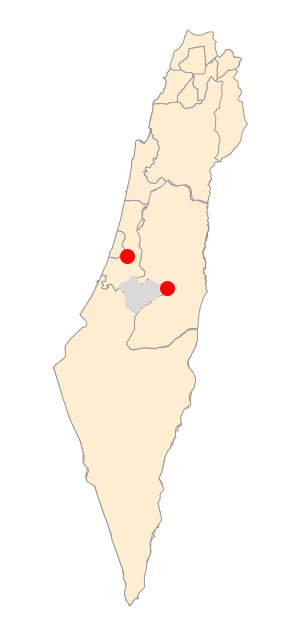
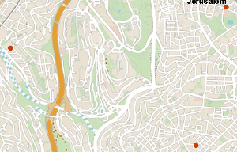
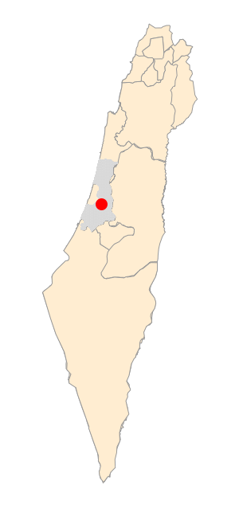
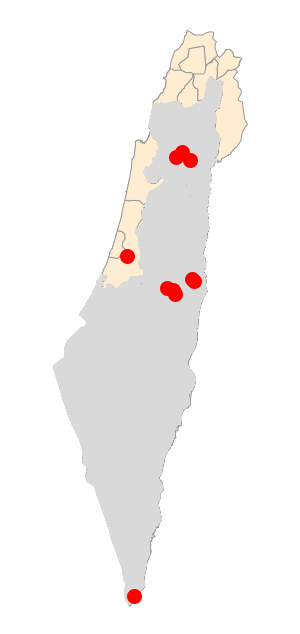
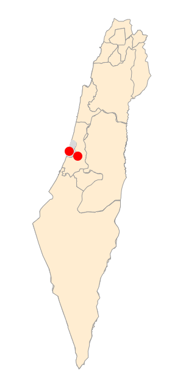

2019-2020 nCov-2 以色列和巴勒斯坦疫情地图
2019-2020 nCov-2 Outbreak in Israel and Palestine
| China/Hong Kong/Macau, Korea, Italy, France, Switzerland, Spain, Andorra, SanMarino, Austria, Japan, Singapore, Thailand, Germany |
近期病例
游客回到法国后被确诊
A tourist after returning to France found positive for the new Corona virus
| Date | Time | English | 中文 | Tel Aviv | |
| 02Mar2020 | 13:00- | Transavia 3933 back to France |  |  | |
| 02Mar2020 | 12:30-13:00 | Train from Jerusalem to Ben Gurion Airport | |||
| 02Mar2020 | 10:30-12:00 | Hillel Cafe(Ramat Beit HaKerem) at Avizohar St 8, Jerusalem, Israel | |||
| 01Mar2020 | 20:00-23:00 | Family Party at Rambam Synagogue, Amatsya St 4, Jerusalem, Israel | |||
| 01Mar2020 | 13:30-14:00 | Train from Ben Gurion Airport to Jerusalem | |||
| 01Mar2020 | -12:30 | Transavia 3930 to Israel |
游客回到意大利后被确诊
A tourist after returning to Italy found positive for the new Corona virus
| Date | Time | English | 中文 | Tel Aviv | |
| 25Feb2020 | 05:15- | Alitalia AZ809 Tel Aviv-Italy | |
||
| 24Feb2020 | 22:30-02:45am+1 | ANIMAR Restaurant 1st Floor Dan Tel Aviv hotel, Tel Aviv | |||
| 24Feb2020 | 08:15-14:00 | 16th Floor, 21 HaArba'a Street, Tel Aviv | |||
| 24Feb2020 | 07:00-08:00 | Taxi from Dan Tel Aviv Hotel to 21 HaArba'a Street, Tel Aviv | |||
| 24Feb2020 | 07:00-08:00 | Breakfast at Dan Tel Aviv hotel, Tel Aviv | |||
| 23Feb2020 | 18:30-21:30 | ANIMAR Restaurant 1st Floor Dan Tel Aviv hotel, Tel Aviv |
欧洲输入病例
Travel history in Europe
| Date | Time | English | 中文 | Haifa District |
| 01Mar2020 | 10:25- | Austrian OS857 Vienna-Tel Aviv | ||
| 01Mar2020 | 08:05- | Austrian OS916 Innsbruck-Vienna | ||
| 25Feb2020 | 20:35- | Austrian OS913 Vienna-Innsbruck | ||
| 25Feb2020 | 16:10- | Austrian OS858 Tel Aviv-Vienna |
欧洲输入病例，参加马德里的Super Classico
Travel history in Europe for the “Super Classico” in Madrid
| Date | Time | English | 中文 | HaMerkaz |
| 03Mar2020 | -02:35 | Brussel Airlines SN3293 Brussels-Tel Aviv |  |
|
| 02Mar2020 | 21:15- | Brussel Airlines SN3728 Madrid-Brussels | ||
| 28Feb2020 | 08:00- | Arkia IZ231 |
欧洲输入病例
Travel history in Europe
| Date | Time | English | 中文 | HaMerkaz |
| 04Mar2020 | 22:40-02:00 | El Al flight LX256 Zürich-Tel Aviv |  |
|
| 27Feb2020 | 05:20-08:40 | El Al/Swiss flight LX257 Tel Aviv-Zürich |
欧洲输入病例
Travel history in Europe
| Date | Time | English | 中文 | HaMerkaz |
| 04Mar2020 | #19 Return from Zürich |  |
||
| 27Feb2020 | #18 Return from Madrid |
欧洲输入病例
Travel history in Europe
| Date | Time | English | 中文 | HaMerkaz |
| 29Feb2020 | 12:20pm | EasyJet EJ3342: Venice to Ben Gurion | EasyJet EJ3342航班，2020年2月29日从威尼斯到本古里安机场 |  |
| Self-quarantine since entry | 自入境以来自我隔离 |
东耶路撒冷居民，旅游车司机，接待过来自西班牙、德国、希腊的游客
Resident of East Jerusalem who drove the tourists from Spain, Germany, Greece
| Date | Time | English | 中文 | East Jerusalem, HaTzafon, Qumran |
| 04Mar2020 | 18:30-20:00 | Restel Hotel, Tiberias | ||
| 29Feb2020 | 12:00-13:00 | Qumran Restaurant, Qumran | ||
| 28Feb2020 | 18:00-08:00am+1 | Golden Crown Old City, Nazareth | ||
| 27Feb2020 | 18:00-08:00am+1 | Golden Crown Old City, Nazareth | ||
| 27Feb2020 | 12:30-15:00 | Dalia(דליה) Restaurant, Migdal | ||
| 26Feb2020 | 18:00-08:00am+1 | Golden Crown Old City, Nazareth |
| English | 中文 | West Bank, Bethlehem | ||
| Unknown | 不明 |  |
| Date | Time | English | 中文 | Jerusalem, Mt Tabor Area, Jericho, Eilat |
| 27Feb2020 | The group left Israel on Aegean Airlines flight number A3925 | 乘坐爱琴海航空A3925离开以色列 |  | |
| 27Feb2020 | 16:00-16:40 | St. George's Church, Lod | 卢德St. George教堂 | |
| 26Feb2020 | 18:40-03:10 | Church of the Holy Sepulcher Jerusalem | 圣墓教堂，耶路撒冷 | |
| 26Feb2020 | 13:10-14:20 | Deir Hajala, near Jericho | Deir Hajala，耶利哥附近 | |
| 26Feb2020 | 12:30 | Zakaa(אקז) Church | Zakaa(אקז)教堂 | |
| 26Feb2020 | 11:00 | Qarantal Monastery/Monastery of the Temptation, Jericho | Qarantal修道院/试探教堂，耶利哥 | |
| 25Feb2020 | 12:30 | Mar Saba, West Bank | 约旦河西岸Mar Saba | |
| 25Feb2020 | 10:30-11:45 | Church of Martha, Mary and Lazarus, al-Eizariya |
拉撒路修道院，伯大尼 | |
| 25Feb2020 | 08:00-10:00 | St. George/Mar Jaris Monastery, Aqabat Jabr |
St. George/Mar Jaris修道院，Aqabat Jabr | |
| 24Feb2020 | 13:30-17:00 | Tomb of Mary and Church of All Nations,Jerusalem | 玛丽亚墓和万国教堂，耶路撒冷 | |
| 24Feb2020 | 08:00-10:30 | Mar Saba Monastery |
Mar Saba修道院 | |
| 23Feb2020 | 18:00-18:30 | Yotvata(התבטוי) Restaurant, near Eilat |
Yotvata(התבטוי)餐馆，埃拉特附近 | |
| 23Feb2020 | 15:30-17:30 | Eilat Observatory, Eilat |
埃拉特海景平台，埃拉特 | |
| 21Feb2020 | 10:30-11:00 | Yotvata(התבטוי) Restaurant, near Eilat |
Yotvata(התבטוי)餐馆，埃拉特附近 | |
| 21Feb2020 | 7:30-8:00 | Dead Sea, Ein Boqeq |
死海，Ein Boqeq | |
| 20Feb2020 | 16:30-17:30 | Yardenit Baptism Site, Beit Yareh |
Yardenit洗礼点, Beit Yareh | |
| 20Feb2020 | 15:00-15:30 | Ein Sheva/Tabigha |
Ein Sheva/Tabigha | |
| 20Feb2020 | 12:00 | Greek Orthodox Church in Kfar Kana |
Kfar Kana希腊正教会 | |
| 20Feb2020 | 11:00 | Basilica of the Annunciation, Nazareth |
圣母领报堂，拿撒勒 | |
| 20Feb2020 | 09:00-10:30 | Mount Tabor Monastery |
耶稣显圣容教堂，他泊山 |
| Date | Time | English | 中文 | Jerusalem, Hebron Road | |
| 27Feb2020 | 20:30 | Train Jerusalem-Ben Gurion Airport |  |
||
| 27Feb2020 | 19:30 | Egged 74 Hebron Road-Central Bus Station Jerusalem | |||
| 27Feb2020 | 11:00-13:00 | Coffee Shop at 36 Emek Refa'im St, Jerusalem | |||
| 27Feb2020 | 10:00 | Egged 74 Hebron Road-Talpiot | |||
| 26Feb2020 | 11:30-14:00 | Hadar Mall Jerusalem, FOX Home | |||
| 26Feb2020 | 09:00-10:00 | Mizrahi Tefahot Bank at 9 Heleni HaMalka Street | |||
| 25Feb2020 | David Remez 4, Jerusalem | ||||
| 25Feb2020 | 14:00-15:00 | KITCHEN STATION Restaurant | |||
| 24Feb2020 | 17:00-19:00 | Hadar Mall, Pierre Koenig 26 Jerusalem | |||
| 24Feb2020 | Egged 74 at 15 King George to Hebron Road | ||||
| 24Feb2020 | 13:00-15:00 | Cafe Rimon on Ben Yehuda, Jerusalem | |||
| 23Feb2020 | 09:30 | Cafe Rimon on Ben Yehuda, Jerusalem and ZARA on Mamilla Avenue |
欧洲输入病例
Travel history in Europe
| Date | Time | English | 中文 | Tel Aviv, Ben Gurion Airport |
| 29Feb2020 | 16:30 | EasyJet EJU3342 Venice to Ben Gurion | EasyJet EJU3342 威尼斯到本古里安机场 |  |
| Self-quarantine since entry | 自入境以来自我隔离 |
本例和Red Pirate商店有关
This case is linked to the shop “Red Pirate” in Or Yehuda
| Date | Time | English | 中文 | HaMerkaz, Tel Aviv | |
| 28Feb2020 | Afternoon | Home quarantine | |||
| 28Feb2020 | 7:30-12:00 | Avigdor Warsaw School, Kiryat Ono | |||
| 27Feb2020 | 20:30-20:45 | Bus 55 from Kiryat Ono Mall(Levi Eshkol) to Ganei Tikva(Hari Yehuda St) | |||
| 27Feb2020 | 18:00-20:30 | Kiryat Ono Mall, TOGO shoes , Renoir Women (Top Floor), Fox Women (Entrance), Fox Kids (Entrance) and Shufersal | |||
| 26Feb2020 | 19:30-22:30 | Wedding at 'Harmonia BaGan' at Gedera Junction | |||
| 26Feb2020 | 17:15-18:00 | Sports hall near Ganei Tikva Municipal Library | |||
| 26Feb2020 | 7:30-13:00 | Avigdor Warsaw School, Kiryat Ono | |||
| 25Feb2020 | 1/2 Hour | 'Red Pirate' Store, Or Yehuda |
本例在Irus，Ness Ziona以西。在Brenner Regional School上学，与Red Pirate商店有关
This case lives in Irus, west to Ness Ziona and goes to school at the Brenner Regional School, linked to the shop “Red Pirate”.
| Date | Time | English | 中文 | Rehovot, Or Yehuda, Tel Aviv | |
| 29Feb2020 | Home quarantine | ||||
| 24Feb2020 | 20:00-22:00 | Bloomfield Stadium, Tel Aviv | |||
| 24Feb2020-26Feb2020 | Brenner Regional School, Rehovot | ||||
| 23Feb2020-26Feb2020 | 16:30-21:00 | 'Red Pirate' Store, Or Yehuda |
Other Cases